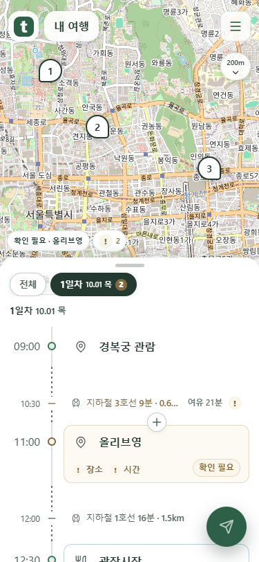
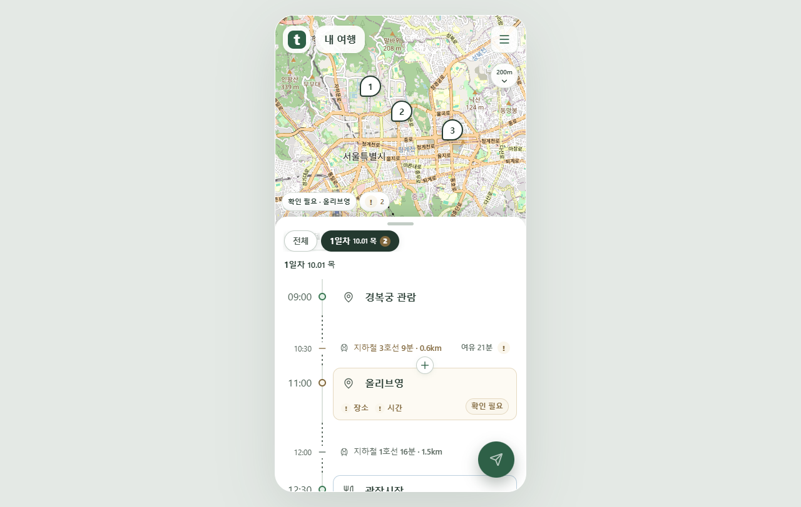
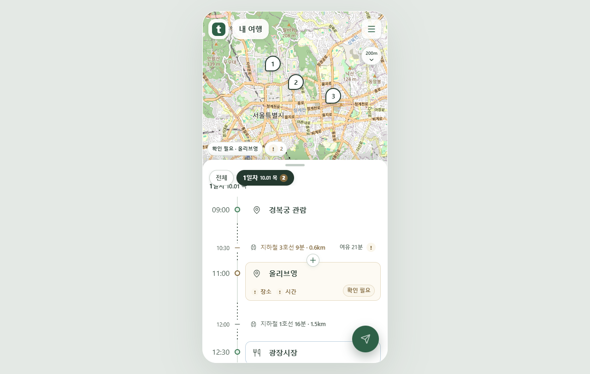
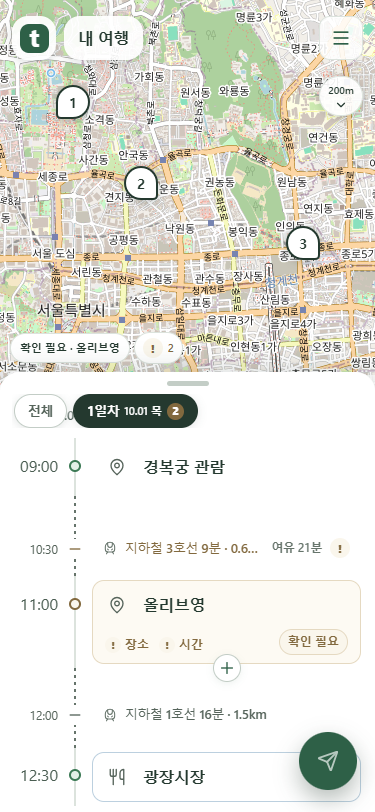
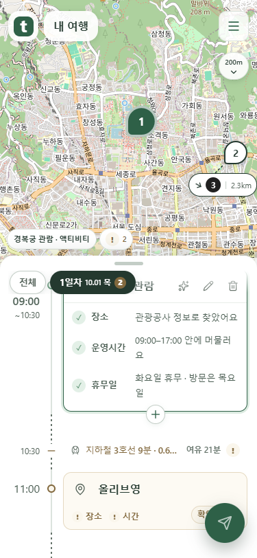
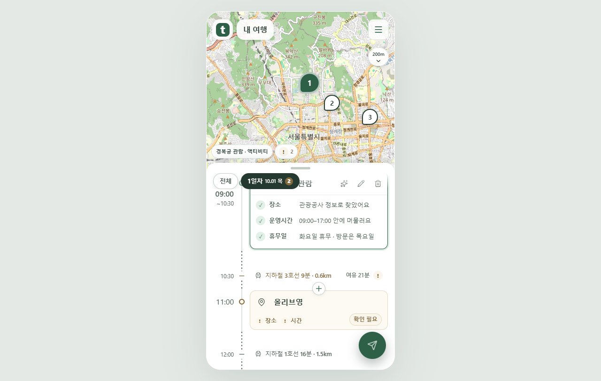

손잡이 아래 32px에서 서서히 사라지고, 손잡이 영역에는 목록 내용이 남지 않습니다. 실제 코드의 Chrome 촬영 화면입니다.
추천 버튼이 손잡이 아래 페이드 구간으로 들어옵니다.


손잡이에 가까운 내용은 더 흐리게 보입니다.

추천 버튼은 손잡이 아래로 올라가 완전히 가려집니다.

카드 내용도 같은 경계에서 사라집니다. 날짜와 손잡이는 선명하게 유지합니다.

